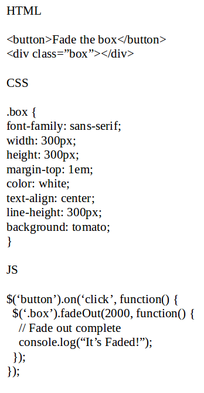

jQuery is a library of JavaScript code that is 10+ years in the making that allows developers to 'write less, and do more'.
Using jQuery cuts down on the amount of code needed to script HTML pages.
jQuery smooths over inconsistencies between the ways web browsers deal with JavaScript
We could use the compressed version to save time loading over the uncompressed; the uncompressed version is better suited during development because we can choose to view the code as we are coding.
We will use a Content Delivery Network (CDN) to host jQuery code and act as a resource reference for our jQuery code. Speed is an advantage of using a CDN.
The jQuery CDN can be found at the link provided from teamtreehouse.com. Copy the code found at the minified link and paste it just before the base scripts.js tag
The return value of nearly every jquery function is a jQuery object.
The dollar sign [$] is a shorthand way of writing jQuery. Sometimes there may be conflicts when using the [$] shorthand because another library may use the [$] character. The prototype.js for example uses [$] to represent document.getElementById. We can use the jQuery 'noConflict mode to avoid conflicts. One way to invoke the no conflict mode is to give $ a substitute alias reference: var j$ = jQuery.noConflict();
jQuery allows us to chain methods together to achieve a desired result. Example: $(this).text("Clicked!").delay(800).fadeOut(400);
jQuery uses the same selectors that css uses in addition to several other generic selectors. We pass the element using a string inside the method: $('li'); $('a'); $('img'); $('p') etc....
We can also use descendant selectors: $('p a');
We can also use class and id selectors: $('.someClass'); $('#someID');
We can also use attribute selectors: $('[name='someName']');
We can also use multiple selectors seperated by a comma: $('li', 'a');
We can use predefined methods to help filter matched elements, such as not, last, first. The elements that match the selector we use are said to be matched. Example: $('li').someMethod(someEvent, someFunction() {...}); all the li elements 'match' the selector we used to target. We can target them easier using the jQuery filter methods.
https://api.jquery.com/category/traversing/filtering/
We can use the .attr() method to get (access and return) an attributes value: console.log($('a').attr('href')); The value accessed and returned is the first 'a' link's href attribute of: index.html because that is the first link on this html page.
The .removeAttr() method will set the attribute to its default value.
We can also set (modify) an 'a', 'href' with a button click using the following syntax:
The call to console.log returns the links current href address. After our modification using the button onclick function, we again use the console.log function to return the newly modified a href.
Below is syntax for opening all external domain links in a new tab, while not using a new tab for my domain.
We can use browser events to cause various executed actions. Events can represent everything from basic user interactions to automated notifications of things happening in the rendering model. Here are two website addresses for in-depth information regarding events. https://developer.mozilla.org/en-US/docs/Web/Events && http://api.jquery.com/category/events/
A callback function is a function that is passed as an argument to another function and is executed AFTER its parent function has completed.
We can pass a callback function that has no arguments using this syntax: $.get("myhtmlpage.html", myCallbackFunction); Note that we don't need quotes or parentheses when calling the callback function.
We can pass a callback function WITH parameters by using an anonymous function as a wrapper. Below is a code snippet example:
Control + Shift + I (linux ubuntu 16.04) will open the console in Google Chrome dev tools.
Below is a callback function example that uses HTML, CSS, and jQuery to depict a fading box.
Two common callback functions are: 1) arr.forEach(callback, [thisArg]) this will run a callback function for each element item in an array. 2a) window.setInterval(function, delayInMilliseconds[param1, param2...etc]); 2b) window.setInterval(code, delayInMilliseconds); This function will call the function repeatedly every time period equal to the delay in milliseconds.
The syntax for the 'on' method is: 1) use the shorthand for jQuery followed by the element selector: $('#someButtonID'). Next we use the .on method followed by parentheses and two arguments; the first argument is the event, we want to 'listen' for, inside quotes, followed by the callback function we want to execute. .on('click', function() {ourFunctionCode}).
The preceding on() method is clean and allows us to attach multiple event handlers without overwriting code; uses a shorthand property that works for any event; and is easy to remember; and gives easy access to the event. itself. If we give the callback function an event parameter: function(event), then we can obtain a wealth of information in the console whenever the event is executed.
Alot of what we do in javaScript involves manipulating the document object model (DOM).
Getters are used to retrieve information while setters are used to assign information to an element.
An example of a getter would be getting the value of some selected element, in this case, a paragraph element: $('p').click(function { and assigning it to a variable: var htmlString = $(this).html(); 'this' refers to the selected element.
An example of a setter would be assigning the var htmlString of the selected element to the .text method: $(this).text(htmlString); Below is an example of the snippet:
This snippet would cause the paragraphs to change to the html code as they are clicked. Below I will illustrate this snippet in action.
The code after the p tags is shown upon a mouse-click. Click me!
Click me too!!!
Hello my name is Matthew
We can create entirely new elements to the DOM and clone existing elements.
Up until now we have been using the [$] (jQuery method) with CSS selectors to make jQuery objects, to do operations on existing DOM nodes. Next we will learn how to pass in HTML code to the jQuery method to create entirely new elements. We will then create cloned elements from existing elements.
The apps.js file in my Downloads/jQuery WorkSpace Files/jQuery-basics Add Content to the Page/project/app.js and post.html fully explain how to add html to a page using jQuery objects and methods.
A huge part of what jQuery is used for is showing and hiding content based upon a user's interaction. We can use animations to make the showing and hiding of content to be a smoother experience.
The show method displays a hidden matched element; the hide method hides a visible matched element; the toggle method determines whether or not a matched element is hidden or visible and displays the opposite.
We can use the fadeIn and fadeOut methods to add nice smooth animations to the page. Check the jQuery section of scripts.js for an example of the fadeIn method applied to the image faded-in below. Notice how the jQuery uses the .css method to set the display property to 'none' so that the image can fade in from not being displayed in the first place. There are a couple of ways to do this; the example I used is one of the ways.
Treehouse has an entire course on User Experience (UX). https://teamtreehouse.com/library/ux-basics 128 minute course.
Another website: https://api.jquery.com/category/effects/basics/
The css method in jQuery can be used as both a getter and a setter, just like the html() and text() methods.
Syntax: .css(propertyName) If we pass it one argument, a string, representing the property of the matched element, it behaves as a getter method, and will return the string value of the string property we passed to it.
Syntax: .css(propertyName, value) If we pass it two arguments, the first being a string property and the second being a string value or number, it behaves as a setter method and will set the property string we indicated as the value we set.
The file with the path jQuery Workspace Files/jQuery-basics Add Content to the Page/projectsjs/apps.js has code that illustrates how to change element styles depending upon user interaction.
Syntax: .remove([selector]) The .remove() method will complete remove an element from the page. We can accomplish the removal of an element in at least two ways; practically, we can use the .empty() method to cause an element to vanish from the page, though the inspection of the page using the dev tools will show that the element is still there, minus the contents. The code for the empty() method is: $('#someElementIDSelector').empty();
We can use the .remove() method to completely remove the element from the html code. It will not show up in the page, nor will it show up in the dev tools upon inspection.
Side note: If the script doesn't work as expected, check to see if scripts have the same name, or id's have the same name. I just found out the hard way that this was the case, after using a test environment that worked as expected. :)
Paragraph One: CLICK ME
Paragraph Two: OR CLICK ME
After the user makes a selection, we need to be able to move around the Document Object Model (DOM) at will.
Below is an example of a DOM Tree structure.
Visual representation of the DOM appears visually to be an upside down tree with branches, thus the DOM-Tree nomenclature was born.
Nodes that are 'contained' within other nodes are said to be descendants of the parent 'container' node item. If the node is exactly one level down, it is called a child node of the parent node.
Nodes that share the same parent are said to be siblings
The node at the base (top) of the DOM Tree is the document node. It is at the top because the DOM models an upside down tree.
We can use parent with a css selector and a more specific selector for more thorough filtering of matched elements like so: $("p").parent(".selected").css("background", "yellow");
The .find() method allows us to conduct a narrowed search, through the matched element or elements.
The .previous() and .next() methods allow us to move from side to side in the DOM--they allow us to select siblings, and is useful for selecting form elements.
We can use the .sibling() method to get a group of siblings to we can perform actions on those elements. It doesn't return the selected element (the original element), only its siblings.
The .child() method returns the immediate children of a selected element.
The .closest() method allows us to get the closest ancestor up the DOM Tree.
The .map() method takes a collection of elements, runs them through a function, and creates a new jQuery object based on the results.
Using jQuery Plugins introduces jQuery plugins -- cool programs that work with jQuery that let you add interactive page effects, engaging user interfaces, and eye-catching additions to web pages.